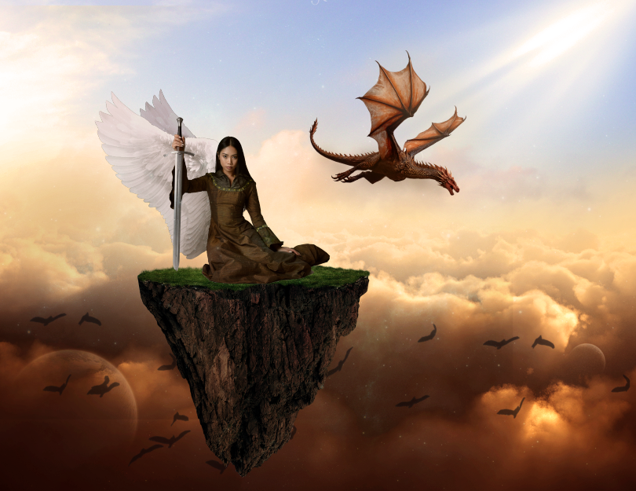
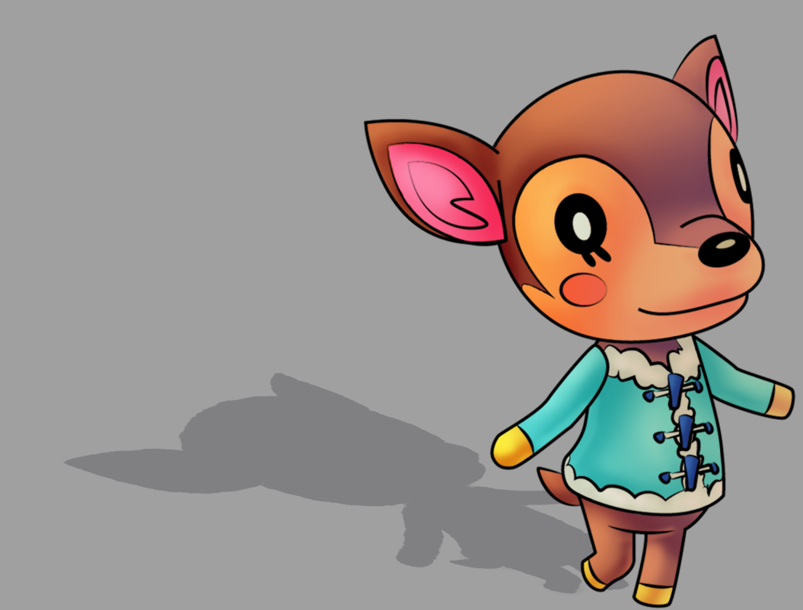
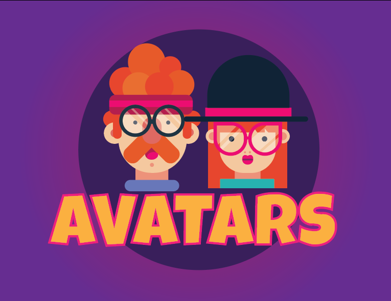
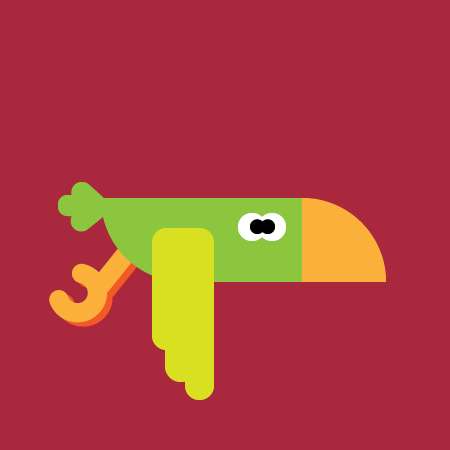

Hello! My name is Victoria Lorenzo, and this is my resume. I was born in Oviedo, Florida, and I have lived here my entire life. I went to Hagerty High School and graduated in 2021. This is my last term at SSC, as I am graduating with my AA, and I will be transferring to UCF in the fall. I will be starting my degree in Digital Media. I have taken previous classes in Adobe Photoshop, Illustrator, and Premiere Pro; however, this is my first time taking a coding class, so I do not have much experience in it. I am ready to learn and improve my skills in this field.

My final project from a previous class

Another assignment from the same class

An avatar I designed

A gif I created
A picket I made in photoshop